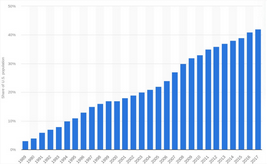

The rest of this page (after the image gallery) is just junk to make the page load slower, so that
you can see there is no weird flicker when the page loads. In bad
implementations of darkmode, the darkmode script doesn’t run until the whole
page loads, so while the page is loading the default color scheme (usually
light) is used, and then a moment later the dark theme is loaded (this is
assuming the user prefers dark; if the user prefers light, then there is no
theme switching so no flicker either). For the user, this means getting
blinded for a moment by a wall of white, and then going back to the expected
dark screen. The implementation here doesn’t have this disadvantage: the
script runs as soon as the <body> tag opens, but before
the rest of the content loads, so the screen is dark from the start.
All images below are listed in the following order: original (unaltered), non-inverted (dimmed), inverted.
